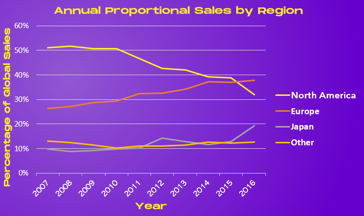
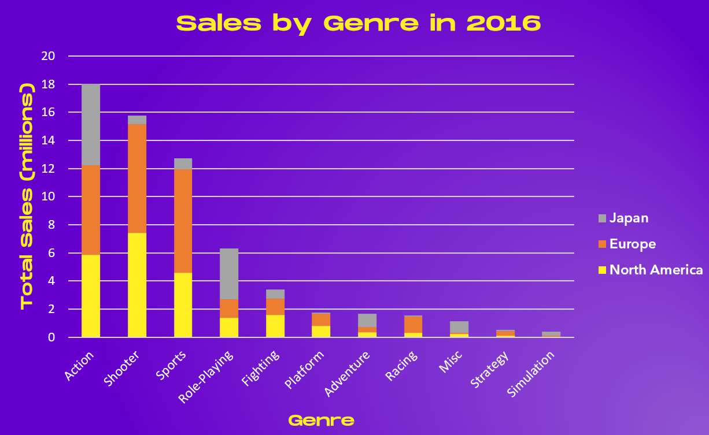

GameCo
Video Game Marketing
Motivation
GameCo, wants to determine how to distribut their marketing budget for the upcoming year. A descriptive analysis of a video game data set is required to foster a better understanding of how GameCo’s new games might fare in the market, and where they should focus in order to maximise potential sales.
Objective
The focus of these asnalyses will be to answer the following key questions to best determine the marketplaces that have the highest potential profits and the types of games that are likely to be successful:
- How are regional sales changing?
- What genres were most successful in 2016?
- Which platforms are going to be big in 2017?
- Who are the main competitors?
TOOLS


Excel, PowerPoint
SKILLS
- Data cleaning
- Data exploration
- Data aggregation
- Statistical analysis
- Descriptive analytics
- Visualisations and presentation
Data
Sales figures for video games from 1980 to 2016 were courced from VGChartz Video Game Sales. The methodology for the collection of these data can be found here.Data Processing
Duplicates and Consistency
- Three duplicate values were found and removed
- Pokemon was recorded under several names (Pokemon, Pokémon and Pok√©mon). These were all changes to Pokemon.
Completeness
The following variables had missing values, any action take is recorded and reported to stakeholders to ensure transparency and enure that potential errors or biases are :| Variable | Missing Elements | Action Taken |
|---|---|---|
| Genre | 1 | Genre was found on the VGChartz website (Adventure) |
| Name | 16 | Deleted, these records contained were found to have no sales information. |
| Platform | 21 | None; sales and year information is present, these will be useful to aspects of analysis. |
| Publisher | 18 | None; sales and year information is present, these will be useful to aspects of analysis. |
| Year | 270 | None; their sales will be relevant to total sales. |
Analysis Extract: Regional Sales Volume
Temporal Analysis of Regional Sales

The visualisation to best display regional sales trends was determined to be a
line graph, with the proportion of annual sales rather than absolute. This made each year
comprable to the others, as the total sales volume annually was inconsistent.
Sales prior to 2007 were excluded as they did not reflect current buying trends.
The data chosen, and the method of presentation gives a clear indication to the marketing team
about the future dominance of Europe over North America as the centre of video game purchasing.
Comparing Genre Sales by Region

Genre sales was shown for the most recent year, in absolute terms. Giving context to the
relative sales by genre to allow GameCo to understand which types of games were the best investment.
The stacked bar allowes the stakeholders to understand how best to divide their budget across the three largest
market regions once the genres of game they are maketing is known.
Recommendations
- Europe is now the largest market and growing. GameCo must increase marketing in Europe to capitalise.
- North American is still the second largest market, but it is continuing to decrease its marketshare. Marketing should regularly review the need and effectiveness of North American marketing strategies.
- Action and Shooter games are most popular worldwide, strong investment in these genres will have global reach due to their international appeal.